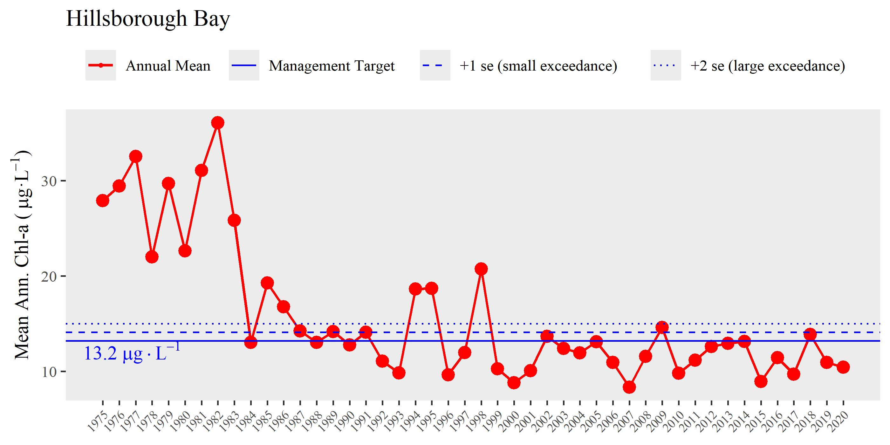

R package for Tampa Bay Estuary Program functions. Please see the vignette for a full description.

Installation
The package can be installed from r-universe. The source code is available on the tbep-tech GitHub group web page: https://github.com/tbep-tech/tbeptools. Note that tbeptools only needs to be installed once, but it needs to be loaded every new R session (i.e., library(tbeptools)).
# enable repos
options(repos = c(
tbeptech = 'https://tbep-tech.r-universe.dev',
CRAN = 'https://cloud.r-project.org'))
# install tbeptools
install.packages('tbeptools')
# load tbeptools
library(tbeptools)After the package is loaded, you can view the help files for each function by typing a question mark followed by the function name, e.g., ?read_importwq, on the console. The help files provide a brief description of what each function does and the required arguments that are needed to run the function.
Package vignettes
The vignettes are organized by topic and are an excellent place to start for understanding how to use the package. Currently, there are five vignettes available for tbeptools:
- Intro to TBEP tools: A general overview of the package with specific examples of functions for working with the water quality report card
- Tampa Bay Nekton Index: Overview of functions to import, analyze, and plot results for the Tampa Bay Nekton Index
- Tampa Bay Benthic Index: Overview of functions to import data for Tampa Bay Benthic Index, under development
- Tidal Creeks Assessment: Overview of functions to import, analyze, and plot results for the assessment of tidal creeks in southwest Florida
- Seagrass Transect Data: Overview of functions to import, analyze, and plot results for the seagrass transect data collected in Tampa Bay
Package structure
Functions in tbeptools fall in three categories depending on mode of use. Each function is named using a prefix for the mode of use, followed by what the function does. The prefixes are:
read: Import current data from the main ftp site.anlz: Analyze or summarize the imported data.show: Create a plot of the analyzed data.
The functions can be easily found in RStudio after loading the package and typing the prefix at the command line. An autofill dialog box will pop up showing all functions that apply for the prefix. This eliminates the need for searching for individual functions if all you know is the category of function you need (e.g., read, anlz, or show).
The function reference page can also be viewed for a complete list of functions organized by category, with links to the help files.
The following example demonstrates use of a subset of the functions for water quality data to read a file from the Hillsborough County Environmental Protection Commission long-term monitoring dataset (available from https://www.tampabay.wateratlas.usf.edu/), analyze monthly and annual averages by major bay segments of Tampa Bay, and plot an annual time series for one of the bay segments.
# load the package
library(tbeptools)
# read current data
wqdat <- read_importwq(xlsx = "wqdata.xlsx", download_latest = TRUE)
wqdat## # A tibble: 26,611 x 22
## bay_segment epchc_station SampleTime yr mo
## <chr> <dbl> <dttm> <dbl> <dbl>
## 1 HB 6 2021-06-08 10:59:00 2021 6
## 2 HB 7 2021-06-08 11:13:00 2021 6
## 3 HB 8 2021-06-08 14:15:00 2021 6
## 4 MTB 9 2021-06-08 13:14:00 2021 6
## 5 MTB 11 2021-06-08 11:30:00 2021 6
## # ... with 26,606 more rows, and 17 more variables:
## # Latitude <dbl>, Longitude <dbl>, Total_Depth_m <dbl>,
## # Sample_Depth_m <dbl>, tn <dbl>, tn_q <chr>, sd_m <dbl>,
## # sd_raw_m <dbl>, sd_q <chr>, chla <dbl>, chla_q <chr>,
## # Sal_Top_ppth <dbl>, Sal_Mid_ppth <dbl>,
## # Sal_Bottom_ppth <dbl>, Temp_Water_Top_degC <dbl>,
## # Temp_Water_Mid_degC <dbl>, ...
# analyze monthly and annual means by bay segment
avedat <- anlz_avedat(wqdat)
avedat## $ann
## # A tibble: 584 x 4
## yr bay_segment var val
## <dbl> <chr> <chr> <dbl>
## 1 1974 HB mean_chla 22.4
## 2 1974 LTB mean_chla 4.24
## 3 1974 MTB mean_chla 9.66
## 4 1974 OTB mean_chla 10.2
## 5 1975 HB mean_chla 27.9
## # ... with 579 more rows
##
## $mos
## # A tibble: 4,484 x 5
## bay_segment yr mo var val
## <chr> <dbl> <dbl> <chr> <dbl>
## 1 HB 1974 1 mean_chla 36.2
## 2 LTB 1974 1 mean_chla 1.75
## 3 MTB 1974 1 mean_chla 11.5
## 4 OTB 1974 1 mean_chla 4.4
## 5 HB 1974 2 mean_chla 42.4
## # ... with 4,479 more rows
# show annual time series of chlorophyll for Hillsborough bay segment
show_thrplot(wqdat, bay_segment = "HB", yrrng = c(1975, 2020))
Issues and suggestions
Please report any issues and suggestions on the issues link for the repository. A guide to posting issues can be found here.
Contributing
Please view our contributing guidelines for any changes or pull requests.